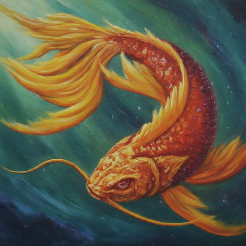
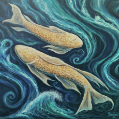
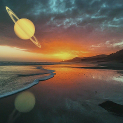

*Hover to see who has these Pisces Placements*
People with Sun in Pisces are known for their empathy and creativity.


The Moon in Pisces signifies a deep emotional understanding and intuition.

Mercury in Pisces enhances communication with sensitivity and imagination.

Individuals with Venus in Pisces are romantic and compassionate.

Mars in Pisces signifies a gentle yet passionate approach to challenges.

Jupiter in Pisces encourages spiritual growth and a love for art.

Saturn in Pisces brings structure to dreams and creativity.

Uranus in Pisces signifies unique creativity and innovation.

Neptune in Pisces enhances intuition and artistic abilities.

Pluto in Pisces signifies transformation through emotional depth.

People with Pisces Rising appear dreamy and approachable.